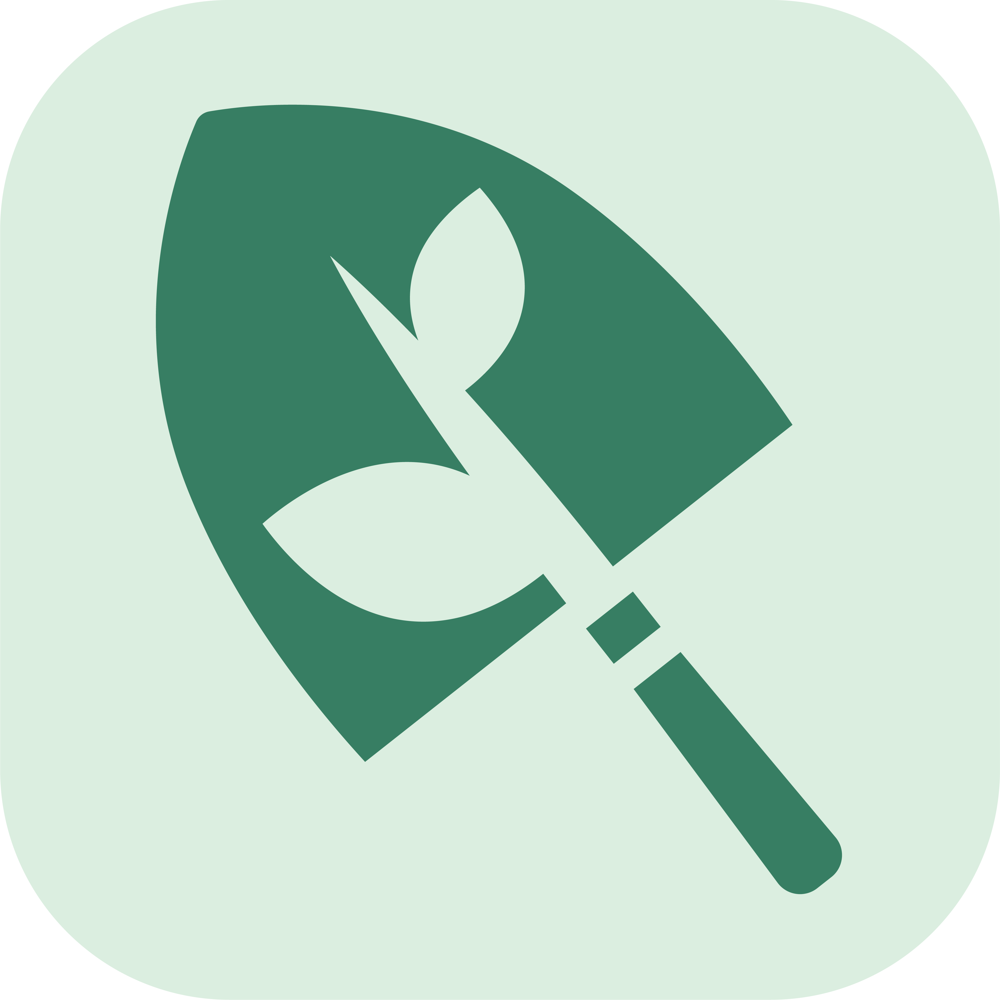
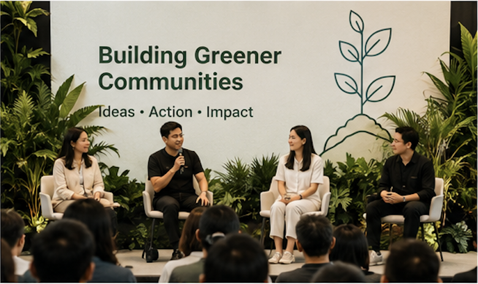
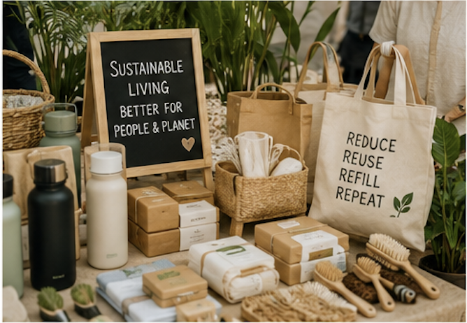
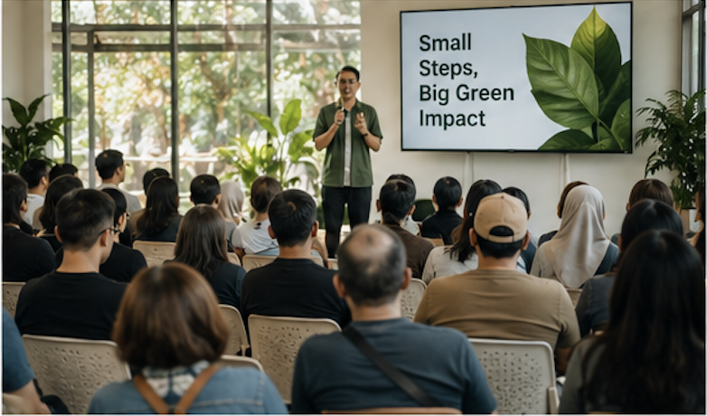
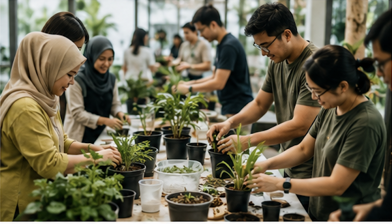

A curated forum and marketplace in Malaysia for agriculture, urban farming, edible gardens, sustainable living, food security, ESG, wellness, and community space activation.
Reserve your partner slot early as a booth vendor, speaker, workshop host, sponsor, or community partner.

Knowledge sharing, panels, and curated partner spotlights.
Booths for green brands, vendors, NGOs, and solution providers.
Hands-on sessions around gardening, composting, wellness, food, and sustainability.
Connect with communities, property stakeholders, educators, and ESG audiences.



The event is planned around November 2026, with the final date and venue to be announced. By reserving a paid waitlist slot, your package will receive priority consideration during partner selection and slot allocation. All slots remain subject to curation, availability, event confirmation, and final partner fit.
Your paid waitlist reservation helps us identify serious partners before public slot opening. Once the date, venue, and programme are confirmed, selected partners will be contacted for next steps.
All slots are curated to keep the event useful and relevant. Prices below are early waitlist rates and may change once the official event date and venue are announced.
For green brands & vendors
For speakers, founders & experts
For hands-on educators
For brands seeking visibility
Highest visibility package
For NGOs, clubs & communities
The goal is to gather people and organizations working toward greener, more useful spaces. Partners can use the platform to share knowledge, showcase solutions, generate leads, build credibility, and connect with communities that care about sustainability.
Put your brand or work in front of a relevant green community audience.
Meet potential customers, collaborators, communities, and project partners.
Share practical knowledge through stage, forum, or workshop formats.
Connect with urban farming, ESG, property, wellness, education, and community players.
Not yet. The event is planned for around November 2026. Confirmed partners and paid waitlist members will receive early updates once the date and venue are finalized.
Reserving a slot means you are joining the paid priority waitlist for your selected package. It gives your package priority consideration, but final confirmation remains subject to curation, availability, event confirmation, and final partner fit.
No. Stage, workshop, and showcase slots are curated to keep the programme relevant and useful for the audience.
This event is a green community forum and marketplace designed to bring together people, brands, organizations, and communities working around urban farming, edible gardens, sustainable living, food security, wellness, ESG, education, and community space activation.
Choose a package above and complete payment through the Stripe link. After payment, you will receive follow-up details for your partner information, topic proposal, booth needs, and confirmation process.
View All Packages